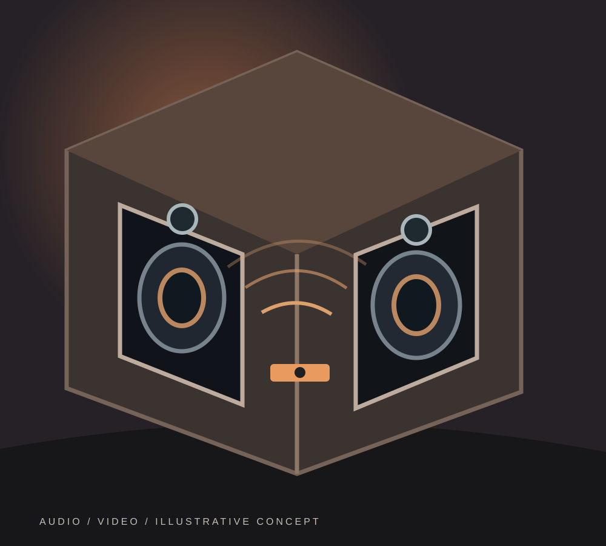

Map the listening area
Speaker positions depend on seating, room shape and how the space will be used.
Plan the equipment, speaker positions and control experience around the room—not the other way around.
A practical field guide · plan locally, share only when ready

A few decisions now can make the first conversation more useful. Use this guide to organize your thoughts—not as a site survey or confirmation of installation feasibility.
Speaker positions depend on seating, room shape and how the space will be used.
Plan power, ventilation and access for receivers, amplifiers and source devices.
Decide which devices and rooms should work together before finalizing cabling.